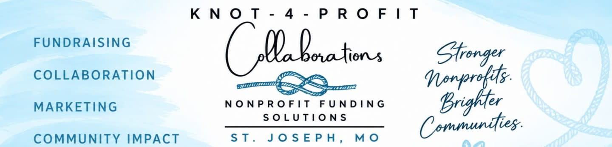

About Knot-4-Profit
Community is
something
we do together.
Good causes need people. Good gatherings give those people a way to show up.
The name behind the gathering
Knot-4-Profit
Collaborations.
Savannah, Missouri
Connected to the community around us.
Helping ideas become shared experiences.
Founded by Terra James, Knot-4-Profit Collaborations works with nonprofits and community groups in Savannah, St. Joseph, and the surrounding area.
Our role is to help turn a cause or an idea into an event people can understand, support, and take part in. That means connecting the planning, promotion, and collaborators around the work.
Every event has its own purpose and partners. We keep the benefiting organization and its mission clear, whether we’re organizing a gathering, facilitating a fundraiser, or supporting an event as a sponsor.

A cause worth gathering for
Good work starts with a connection.
Bring your organization, your idea, or your willingness to help. We’ll start with a conversation.
Let’s connect